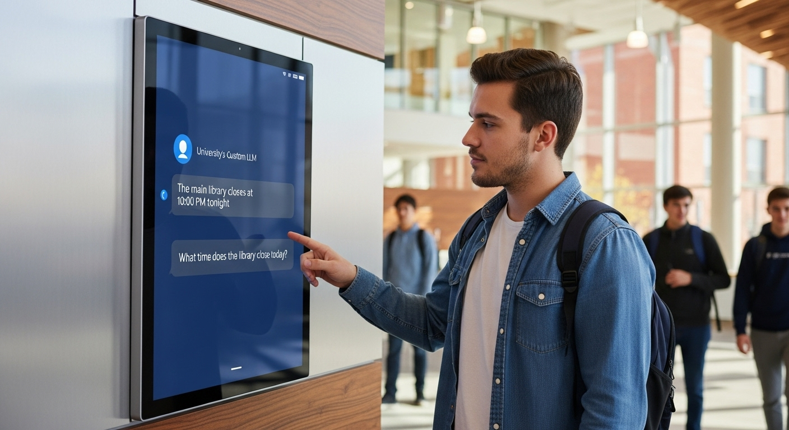

پلتفرم یکپارچه هوش مصنوعی دانشگاه
University AI Platform • LLM & Robotics
نمایش عملکرد پلتفرم هوشمند دانشگاه در حین کار
مقاله پروژه: تحول دیجیتال در دانشگاه با پلتفرم هوشمند یکپارچه
۱. کشف مشکل: چالشهای زندگی دانشجویی در محیط سنتی
دانشگاهها محیطهای پیچیدهای هستند که دانشجویان و کارکنان با چالشهای متعددی روبرو هستند: از یافتن اطلاعات دقیق و سریع درباره خدمات دانشگاهی گرفته تا مشکلات حملونقل داخلی، رزرو امکانات و ارتباطات پراکنده. سیستمهای سنتی اغلب ناکارآمد، زمانبر و فاقد یکپارچگی هستند.
۲. راه حل: اکوسیستم هوشمند مبتنی بر هوش مصنوعی
این پروژه یک پلتفرم یکپارچه و ماژولار را برای هوشمندسازی کامل دانشگاه ارائه میدهد. هدف اصلی، ایجاد یک تجربه کاربری مدرن، روان و کارآمد برای تمام اعضای جامعه دانشگاهی از طریق سه بازوی اصلی است: اطلاعرسانی هوشمند، خدمات خودکار و ارتباطات یکپارچه.
۳. ویژگیهای کلیدی و ماژولهای پیادهسازی شده
- ماژول اطلاعرسانی (مانیتورهای هوشمند): در نقاط کلیدی هر ساختمان، کیوسکها و مانیتورهای هوشمندی نصب شدهاند که به یک مدل زبانی بزرگ (LLM) متصل هستند. این مدل بر روی دادههای داخلی دانشگاه (مانند قوانین آموزشی، نقشه ساختمانها، رویدادها) آموزش دیده و میتواند به صورت صوتی یا متنی به سوالات دانشجویان و مراجعین پاسخ دهد.
- ماژول خدمات رفاهی (رباتهای دلیوری): ناوگانی از رباتهای خودران در محوطه دانشگاه فعال هستند. دانشجویان میتوانند از طریق اپلیکیشن، غذا از بوفه یا وسایل مورد نیاز خود را سفارش داده و رباتها آنها را در سریعترین زمان ممکن به محل استقرار دانشجو تحویل میدهند. این سیستم باعث کاهش صفها و افزایش بهرهوری میشود.
- ماژول ارتباطی (سوپر-اپلیکیشن دانشگاه): یک اپلیکیشن جامع موبایل که تمام خدمات دانشگاهی را در خود جای داده است. از ردیابی زنده اتوبوسهای دانشگاه، رزرو سالن مطالعه و امکانات ورزشی، تا یک شبکه اجتماعی داخلی برای ارتباط دانشجویان و اطلاع از رویدادها، همه در یک پلتفرم واحد قابل دسترسی است.
گالری تصاویر پروژه

رابط کاربری پلتفرم هوشمند دانشگاه
جزئیات فنی پیادهسازی
تکنولوژیهای استفاده شده
- • LLM (Large Language Model): پردازش زبان طبیعی
- • Python & DJANGO : بکاند و API سرویسها
- • DART & FLUTTER: اپلیکیشن موبایل
- • PostgreSQL: پایگاه داده مرکزی
- • Redis: کش و session management
ویژگیهای کلیدی
- • مانیتورهای هوشمند اطلاعرسانی
- • رباتهای دلیوری خودکار
- • اپلیکیشن یکپارچه دانشگاهی
- • سیستم رزرو امکانات
- • ردیابی زنده حملونقل
نتایج و تأثیرات
80%
کاهش زمان دسترسی به اطلاعات
65%
افزایش رضایت دانشجویان
90%
بهبود کارایی خدمات